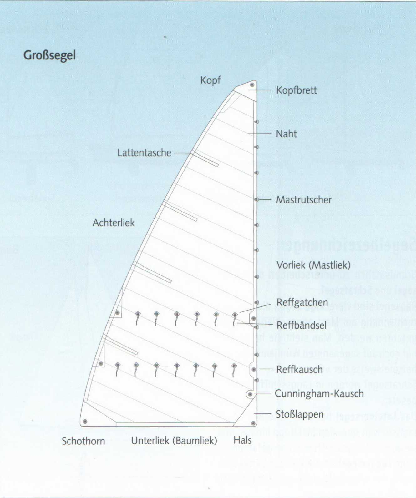
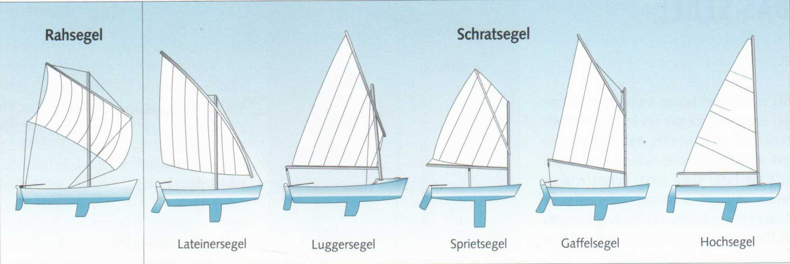
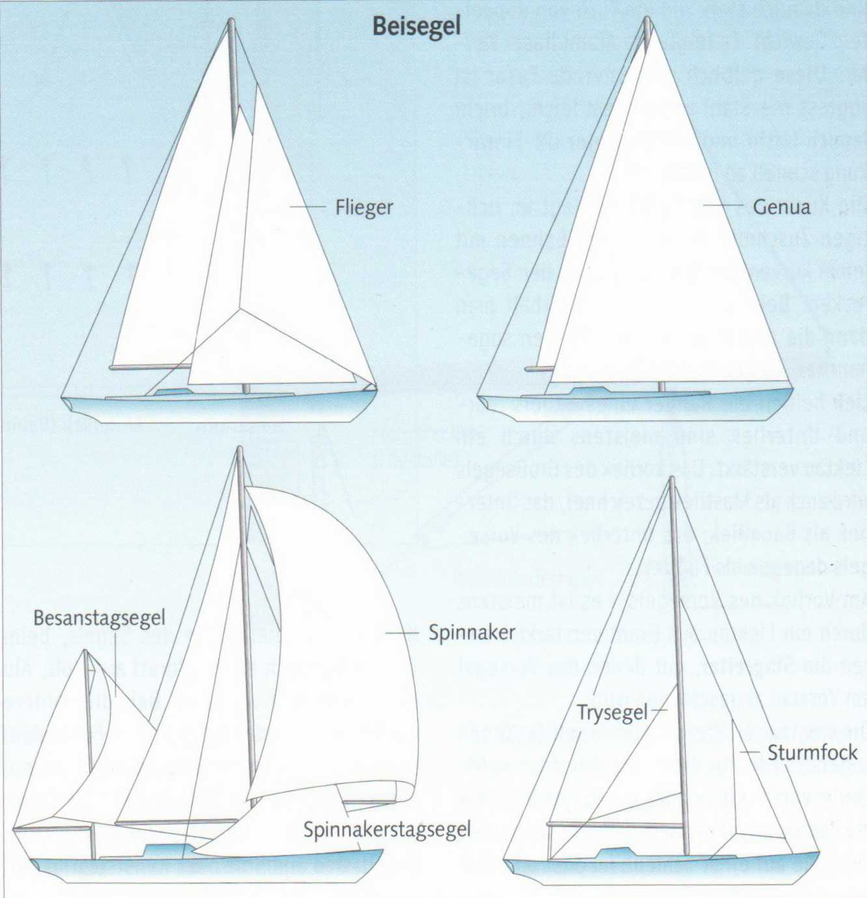
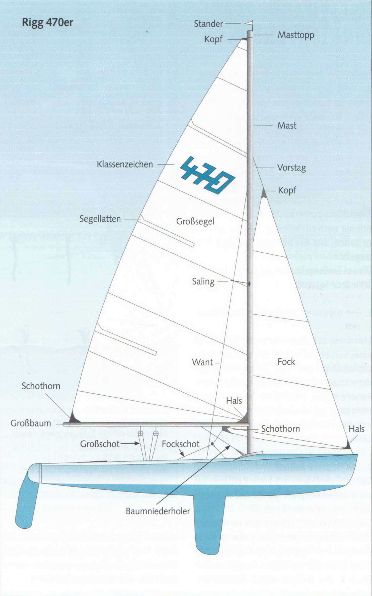

Ещё несколько лет назад для яхтенных парусов использовался исключительно дакрон (Dacron), созданный на основе полиэстера. Нейлон или перлон применялись только для лёгкой спинакерной ткани, так как это волокно сильно растягивается. Полиэстерные ткани страдают от ультрафиолетового излучения и чувствительны к истиранию и перегибам. В конце 1970-х годов появилась полиэстеровая плёнка майлар (Mylar). Относительно слабую полиэстерную ткань наклеивали на майларовую плёнку, делая её прочной, как ткань двойного веса. Затем появилось арамидное волокно кевлар (Kevlar). Это желтоватое волокно прочно на разрыв, как сталь, и чрезвычайно легко, однако легко ломается и быстро теряет прочность под воздействием УФ-излучения.
Искусство парусного мастера заключается в правильном раскрое отдельных полотнищ со слегка криволинейным ходом к углам паруса. При сшивании получается желаемая выпуклость — так называемое пузо (Bauch).
Шкаториной (Liek) называют кромки паруса. Передняя и нижняя шкаторины обычно усилены ликтросом (Liektau). Передняя шкаторина грота также называется мачтовой шкаториной (Mastliek), нижняя — гиковой шкаториной (Baumliek); нижняя шкаторина стакселя — нижней шкаториной (Fußliek).
На передней шкаторине стакселя — она обычно усилена ликтросом из проволоки — расположены раксы (Stagreiter), которыми стаксель крепится к форштагу.
Ликтросы на передней и нижней шкаторинах грота заводятся в ликпаз (Keep, Nut или Hohlkehle) мачты и гика. На передней шкаторине могут быть также пришиты ползунки (Rutscher), скользящие по рейке в мачте или на мачте.
Топ (Kopf) — верхний угол паруса, у грота усиленный доской (Kopfbrett) из дерева, алюминия или пластика. Галсовый угол (Hals) — передний нижний угол, к которому на крупных лодках подсоединяется галсовый стопор (Halsstrecker). Шкотовый угол (Schothorn) — задний нижний угол, к которому на стакселе крепится стаксель-шкот (Fockschot).
Латы (Segellatten) из дерева или пластика в латкарманах на задней шкаторине (Achterliek) служат для

формирования профиля паруса и предотвращения заполаскивания (Killen) задней шкаторины.
Рифовый кренгельс (Reffkausch), рифовый люверс (Reffgatchen) и риф-штерты (Reffbändsel) нужны для взятия рифов (Reffen), то есть уменьшения площади паруса при сильном ветре. Каннингхэм-кренгельс (Cunningham-Kausch) (или Cunningham-Hole) служит для настройки паруса. Если потянуть его вниз к галсовому углу, пузо смещается вперёд.

Принципиально различают прямые паруса (Rahsegel) и косые паруса (Schratsegel).
Прямые паруса — это четырёхугольные паруса, которые ставятся на рее (Rah), закреплённой перпендикулярно мачте. Сегодня их можно увидеть почти исключительно на так называемых винджаммерах (Windjammer), как, например, «Горх Фок» (Gorch Fock).
Косые паруса ставятся вдоль диаметральной плоскости судна.
Латинский парус (Lateinersegel) хотя и имеет рей, но он далеко выступает за топ мачты и ставится вдоль судна.
Люгерный парус (Luggersegel) имеет укороченный рей — гафель, которая, однако, ещё немного выступает вперёд за мачту.
Шпринтовый парус (Sprietsegel) — четырёхугольный парус, растягиваемый диагональной распоркой, называемой шпринтом (Spriet).
Гафельный парус (Gaffelsegel) имеет гафель, шарнирно закреплённую на мачте с помощью усов (Klau). Иногда также называется по-английски «гантер-ригг» (Gunther-Rigg).
Бермудский парус (Hochsegel) также называется бермудским, потому что первоначально использовался на рыбацких лодках Бермудских островов. Тип паруса — люгерный, гафельный или бермудский — не влияет на типовое обозначение яхты, такое как кэт, шлюп или кеч. Показанные здесь лодки по типу вооружения все являются кэтботами (без переднего паруса). Дальнейшее подразделение косых парусов приводит к стакселям (Stagsegel). Так обозначают все паруса, которые ставятся не на мачте, а на штаге, как, например, все передние паруса.

Под основными или рабочими парусами (Haupt- oder Arbeitssegel) понимают стандартное оснащение данного типа яхты. То есть стаксель и грот шлюпа; стаксель, грот и бизань кеча или иола; кливер, стаксель и грот тендера. К ним добавляются дополнительные паруса (Beisegel) — паруса для лёгкого или штормового ветра. Пожалуй, важнейший дополнительный парус — генуя (Genua), увеличенный стаксель из более лёгкой ткани. Если на борту их несколько, они обозначаются от большей к меньшей номерами I, II и т.д.
Спинакер (Spinnaker) — это большой выпуклый передний парус из очень лёгкой ткани, который ставится со свободной нижней шкаториной на спинакер-гике (Spinnakerbaum) при попутных ветрах.
Блистер (Blister) — это разновидность уменьшенного асимметрично скроенного спинакера для крейсерских яхт, который ставится «свободно», без гика. Аналогично скроен геннакер (Gennaker), ставящийся на бушприте. Флайер (Flieger) или янки (Yankee) — это легкоходный кливер для тендеров.
Спинакер-стаксель (Spinnakerstagsegel) — это экстремально низко и широко скроенный стаксель, использующий свободное пространство под спинакером. Трисель (Trysegel) — треугольный парус, как и штормовой стаксель (Sturmfock), из грубой ткани, который ставится вместо грота со свободной нижней шкаториной.
